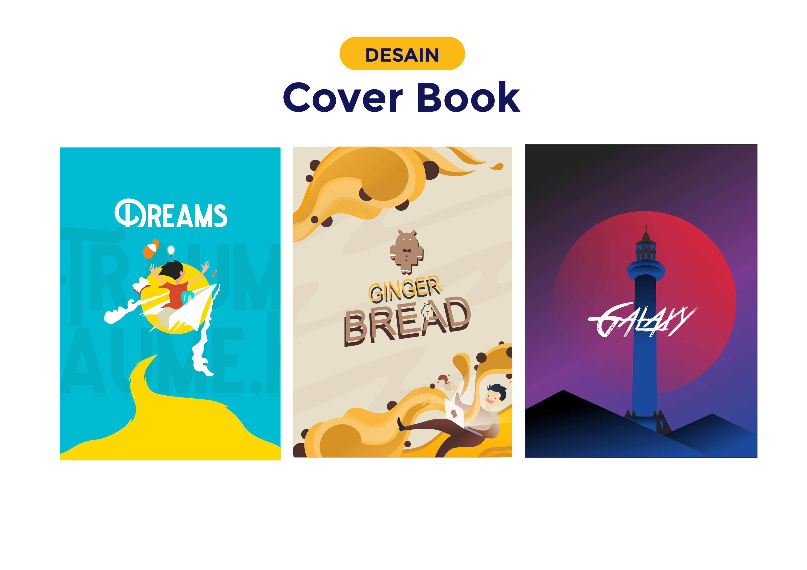

Poster

Poster adalah media publikasi yang terdiri atas tulisan, gambar ataupun kombinasi antar keduanya dengan tujuan memberikan informasi kepada khalayak ramai. Poster atau plakat juga adalah karya seni atau desain grafis yang memuat komposisi gambar dan huruf di atas kertas berukuran besar. Pengaplikasiannya dengan cara ditempel di dinding atau permukaan datar lainnya dan dengan sifat mencari perhatian mata sekuat mungkin, poster juga bisa menjadi sarana untuk mempromosikan produk, jasa, kegiatan, seputar pendidikan dan lain-lain.
Poster biasanya dipasang ditempat-tempat umum yang dinilai strategis seperti sekolah, kantor, pasar, mall dan tempat-tempat keramaian lainnya. Informasi yang ada pada poster umumnya bersifat mengajak masyarakat. Poster ini umumnya ditempel di dinding atau permukaan yang relatif datar ditempat-tempat umum yang ramai agar informasi dan pesan yang ada didalam poster tersebut bisa tersampaikan kepada masyarakat luas.
Cover

Cover Buku (sampul buku) adalah pelindung bagian dari isi buku yang berupa lembaran-lembaran, fungsinya juga sebagai pengikat lembaran-lembaran kertas isi buku agar tidak mudah lepas. Fungsi Cover Buku sendiri tak hanya menjaga isi buku. Cover Buku bertujuan untuk menandai buku agar mudah dikenali serta menginformasikan sedikit mengenai isi sebuah buku.
Secara keseluruhan mengenai cover buku, baiknya memiliki desain yang menarik; agar mudah dikenali dan menjadi identitas buku itu sendiri. Jadi pas dijejerkan pada rak buku, kita sudah tahu buku mana yang kita cari, tanpa harus membaca judul satu persatu.
Logo
Logo merupakan suatu identitas visual terhadap suatu entitas yang mempunyai kriteria khusus tertentu, seperti bentuk, filosofi, dan warna.
LOGO IT
Logo ini merupakan sebuah logo bertemakan IT yang menandakan komunitas teknologi.
LOGO ICON
Logo ini merupakan logo yang mewakili sebuah simbol tertentu dan maksud tujuan sesuai arti dari masing masing simbol yang ada pada gambar.